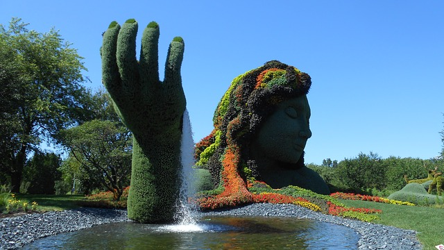
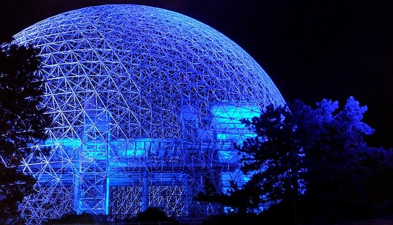

Itinerantur

Montreal est la ville la plus importante du Québec ( mais non sa capitale ) , la plus dynamique également, et ce notamment sur le plan culturel : Les festivals se succèdent toute l'année, du Festival international de jazz au festival juste pour rire en passant par Montréal en lumière ou la Nuit blanche pour nen citer que quelques uns parmi un véritable foisonnement d'initiatives.

La Biosphère est un musée de l'environnement situé sur l'île Sainte-Hélène à Montréal, dans l'ancien pavillon des États-Unis de l'Exposition universelle de Montréal en 1967. À la suite d'une entente avec la ville de Montréal en 1990, c'est Environnement Canada qui reçoit le mandat de définir le concept muséal, de choisir les expositions et d'organiser l'animation et la gestion du musée.
La conception du dôme géodésique de la Biosphère, le plus imposant du genre au monde, est due à l'architecte américain Richard Buckminster Fuller.